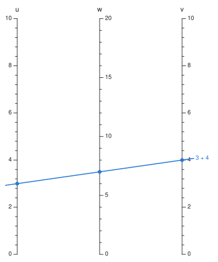

How it works#
This page follows a chart through the package, from a formula to a picture, for readers who want to know what is computed at each step and why. The other pages say how to use each piece; this one says what it does inside, and links back to them for the rest.
The pipeline has five stages, each producing something the next one consumes:
| stage | produces | source |
|---|---|---|
| construction | a chart whose every scale is a curve | construct.jl, compound.jl, net.jl, fan.jl |
| automatic construction | the same, from a formula | auto.jl, auto_chain.jl |
| solving | values, and the lines that read them | solve.jl |
| layout | a NomogramDrawing: pure geometry |
ticks.jl, drawing.jl |
| rendering | SVG, or a Makie Figure |
svg.jl, ext/NomogramsMakieExt.jl |
Everything rests on one representation, so that comes first.
One condition: collinearity#
A nomogram asserts a single thing: a point taken from each scale lies on one straight line exactly when the values satisfy the relation. For three points that is d'Ocagne's criterion (see the Bibliography),
and nothing else about the picture matters to what it computes. So the package stores each scale as nothing more than a parametric curve, value -> (x, y), over a domain. A Scale is a Variable (name, label, tick preferences), the domain it covers, that curve, the side its ticks go on, and a kind — :scale for one a reader takes values from, :grid for a strand of a Net. A Nomogram is a list of scales, a canvas size, a title, and optionally the algebraic relation the scales are meant to encode.
Nothing requires the curves to come from a construction. Three scales built by hand, with v twice as far from u as w is and w at half scale, chart u + v = w: a line between heights 10u and 10v crosses the middle at their average, 5(u + v).
using Nomograms
u = Scale(Variable(:u; domain = (0, 10)), (0.0, 10.0), u -> (0.0, 10u), :left)
v = Scale(Variable(:v; domain = (0, 10)), (0.0, 10.0), v -> (70.0, 10v), :right)
w = Scale(Variable(:w; domain = (0, 20)), (0.0, 20.0), w -> (35.0, 5w), :right)
sum3 = Nomogram([u, v, w]; width = 70, height = 100)
drawing(sum3; isopleths = [isopleth(sum3; u = 3, v = 4, label = "3 + 4")])
The determinant itself is align_residual: the cross product of q − p with point − p, which is twice the signed area of the triangle the three points make. It is zero on the line and grows linearly off it:
p, q = point(u, 3), point(v, 4)
(align_residual(w, 7, p, q), align_residual(w, 8, p, q))(0.0, 350.0)Because every chart reduces to scales, everything downstream — solving, ticks, labels, both renderers — is written once, against the curves. Nomogram, CompoundNomogram and NetNomogram differ only in how they are solved; for drawing, all three are an AbstractNomogram: scales, a canvas and a title.
Construction: choosing the curves#
Each constructor is a particular way of choosing curves that makes the determinant agree with a relation. Building charts shows them in use; here is what each computes.
Parallel scales. additive_nomogram charts f₁(u) + f₂(v) = f₃(w) in closed form. The outer scales go on x = 0 and x = W at heights a₁(f₁ − p₀) and a₂(f₂ − q₀), each gradient fitting its transform's range to the canvas height. A line between them crosses x = λW at (1 − λ)y₁ + λy₂, and choosing λ = a₁ / (a₁ + a₂) makes that a linear function of f₁ + f₂ — so the middle axis's position and gradient are consequences of the outer two, not choices. Its domain follows the same way: the reachable range of f₃ is [p₀ + q₀, p₁ + q₁], mapped back through the result's inverse transform, or, if a domain was given, checked against that range.
That middle axis hugs whichever outer axis spans more. When the gradients differ by more than max_modulus_ratio (4 by default), the steeper is capped by shortening that axis and centring it; shifting an outer axis by d shifts every crossing of the middle one by d times that axis's share of the width, so the middle axis is shifted to match and no reading changes. multiplicative_nomogram wraps every transform in a logarithm and calls additive_nomogram.
The N-chart. ratio_nomogram puts f₁ up the left edge and f₂ down the right, and reads the ratio on the diagonal between their zero corners. A line through the two crosses the diagonal at s = kr / (kr + 1), with r = f₁/f₂ and k the ratio of the two gradients: a projective scale, which is why a ratio spanning decades gets decade-based ticks there.
Curves you supply. determinant_nomogram takes one curve per variable in whatever coordinates are natural, samples each at 129 points to measure the combined bounding box, and maps that box onto the canvas with an affine map — independent factors on the two axes unless preserve_aspect is set. An affine map keeps collinear points collinear, so the fit cannot change an answer. Each scale's ticks go on the side whose normal points away from the centre of the canvas, so labels face outwards on a curve as they do on a parallel chart.
Reshaping. project composes every curve with a homography and re-fits the result with the same affine step. projective_transform finds the homography from four point pairs by solving the 8 × 8 linear system their coordinates give; a point the map sends to infinity is reported against the scale it lies on. fan is a projective map chosen to bring the point where parallel axes meet onto the page, so they become spokes; it builds both orientations, with each axis's top at the rim and at the hub, and keeps whichever labels more ticks.
Chains. compound places each later stage with a similarity — rotation, uniform scale, translation — carrying its copy of the shared scale onto the one already placed. It is computed as one complex division from the shared scale's points at a quarter and three quarters of its domain, then checked at 17 points along the whole domain, since nothing guarantees the two copies are the same shape. The stages are then translated together to the origin and their scales listed left to right.
Nets. A Net is a surface (u, v) -> (x, y) filling one slot of the alignment line. It is drawn as strands — for each round value of one variable, the curve traced by the other — and each strand is an ordinary Scale of kind :grid, so the drawing code needs nothing new. Four or more variables derives the condition a net has to meet.
Every construction that knows its relation stores it in the chart, which is what lets max_relation_residual solve the geometry over a grid of inputs and compare each answer with the algebra.
Solving: where a line crosses a curve#
Reading a chart, by eye or by evaluate, is one question: where does the line through the known points cross the unknown's scale?
The solver first checks that exactly one variable is missing and that every known value is inside its scale's domain, then takes two known scales' points as p and q. The unknown is a root of v -> align_residual(scale, v, p, q) on that scale's domain, and solve_all_on finds every root, with Roots.find_zeros, rather than bracketing one between the ends of the domain. A straight scale gives a residual linear in position and so at most one root; a curved scale can give several, and each is a genuine solution. The search runs a hair past each end of the domain where the curve is still defined, and clamps back, so that a root lying exactly on an end is not lost to rounding.
evaluate then insists on one answer and throws, listing them, if there are more; evaluate_all returns them all; and isopleth returns the single line with every crossing marked. Solving shows each.
The other chart types reduce to this. A CompoundNomogram is solved by propagation: any stage with exactly one unknown is read, its answer joins the knowns, and the pass repeats until nothing is left or no stage can move — so any set of inputs that closes the chain works, whichever end it starts from. A NetNomogram with both net variables known contributes one fixed point, and the problem is the ordinary one. With one of them unknown, the line is fixed by the two scales and the answer is where it crosses the strand of the known one, which is a curve and may be crossed twice.
From a formula#
auto_nomogram builds all of the above from a function. From a formula gives the mathematics; this is the order things happen in.
Wrapping the formula. The function is first put behind a FunctionWrapper of fixed signature, (Float64, …) -> Float64, one per number of inputs. Every Julia closure has a type of its own, and code specialised on it would be compiled again for each formula a user writes. Behind the wrapper it compiles once, and precompile.jl runs the common paths when the package is precompiled, so that compiled code is already cached.
Testing separability. For two inputs, separability_defect evaluates L = ln|F_x / F_y| on a 9 × 9 grid inset 2% from the edges of the domain, and measures the worst violation of the rectangle identity
about the middle of the grid. Derivatives are central differences whose step scales with the argument as well as the domain, switching to one-sided formulas at the edges so F is never called outside the domain it was given. A defect above 1e-6 is an error saying the formula has no three-straight-scale chart; so is a derivative that changes sign, since a straight scale cannot fold back.
Recovering the transforms. If the identity holds, F_x / F_y = f′(x) / g′(y), so holding y at the middle of its domain gives f′ and holding x gives g′, each up to the same constant. Each is integrated with five-point Gauss–Legendre quadrature over 256 panels — spaced geometrically when the domain spans more than a decade, where a log-like integrand changes fastest — and stored as a TabulatedScale: values and exact derivatives at the nodes, joined by cubic Hermite interpolation, extended linearly past the ends.
growth = auto_nomogram((r, n) -> (1 + r / 100)^n, :rate => (1, 20), :years => (1, 30), :growth)
growth[:rate].variable.transformTabulatedScale(257 nodes on [1, 20])The result's transform h needs F inverted, which is avoided by walking a straight path across the domain from the corner minimising F to the corner maximising it. Along that path both inputs move the way that raises F, so F rises steadily; the path parameter is solved for at 1025 values of F, and at each h = f + g with h′ from the chain rule. The three transforms are only fixed up to a common sign, which is chosen so the result axis reads upwards. Each axis's tick style is chosen at this point too, by how its transform spreads its values.
Checking. The transforms go to additive_nomogram, with F itself stored as the chart's relation. The finished chart is then solved on a 9 × 9 grid of inputs and every answer compared with F; a disagreement above rtol of the result's range means the chart is not returned.
Chains. With three or more inputs, each pair (xᵢ, xⱼ) is tested as a first stage: does F depend on it only through one combination? That holds exactly when F_i / F_j is unchanged by the other inputs, so the test evaluates the log of that ratio on a 5 × 5 grid of the pair and compares it across three settings of each of the rest. If it passes, the combination T is F with the rest held at their midpoints, charted by the two-input path onto a bare turning line. The remainder G(t, rest…) needs, for each t, some point where T = t; the same rising path is tabulated once against t, so each call of G costs an interpolation rather than a root find. G is then charted the same way, recursively, until two inputs are left.
The stages are joined with compound, which fails — and the pairing with it — when two stages want the turning line on differently shaped scales, as (a + b)·c does. Layout is searched at the same time. Every workable pairing is built for the first two levels of the chain, and the one whose narrowest gap between neighbouring axes is widest, relative to the chart's width, is kept; deeper levels take the first that works, since the search multiplies with every level. Each earlier stage has one input landing inside the rest of the chain, so it is mirrored and resized, between a quarter of the final stage's width and all of it, to put that input midway between axes already there. The assembled chain is verified as a whole against F on a grid of four values per input.
Layout: from curves to geometry#
drawing turns a chart into a NomogramDrawing: polylines, tick marks with their normals and label anchors, titles, and isopleth segments, all in chart units with y upwards. It works in a fixed order, because each step reserves room the next must respect.
Paths. Each scale is sampled at 129 points, and collapsed to its two end points if every sample lies on the chord — as every axis of a parallel chart does.
Titles. Axis titles are placed before any tick, against each other and against the axis lines of every other scale a reader uses. Each title tries off the end of its axis, continuing the direction of the curve, at the higher end first and then the other, then steps further out from both. Far enough out is always clear, so the search is finite and ends in a position that overlaps nothing: a title is never drawn on top of another or across an axis.
Ticks. For each scale,
candidate_ticksoffers values that are round in the variable, ordered by how much they matter — decades before 5s before 2s on a log axis, multiples of 10 before multiples of 5 on a linear one, the user's order for explicitticks.thin_ticksthen places them in that order, the domain's ends first when they are numbers someone chose (at most three significant figures), rejecting any that would land too close on the page to one already placed. A compressed stretch of a reciprocal or log axis therefore keeps fewer labels, and the ones it keeps are the roundest. Drawing covers the tick rules in more detail.Isopleth segments. Each alignment line runs from its leftmost to its rightmost crossing, extended by
isopleth_overhangeach way. Only the span between the crossings counts against labels.Collisions across the chart. Thinning compares a scale only with itself. One pass over the whole chart then takes major labels, then minor ones, and keeps each only if its box overlaps nothing already reserved, is not struck by an alignment line, and does not sit across another scale's axis;
segment_hits_boxdoes the line tests by clipping. A rejected label is removed and its tick mark kept. Text boxes are estimated from the label's length, size, alignment and rotation (label_box), with no font metrics, so the layout gives the same answer whichever backend draws it.Isopleth labels. These were asked for by name, so they are moved rather than dropped:
nudge_cleartries the end of the line, then steps either side of it along the perpendicular until the label is clear.Chart title and bounds. The bounding box is grown over everything placed, and the chart title is centred above it.
The result is plain data, which can be inspected directly:
d = drawing(sum3)
[(sd.name, length(sd.ticks), count(t -> !isnothing(t.label), sd.ticks)) for sd in d.scales]3-element Vector{Tuple{Symbol, Int64, Int64}}:
(:u, 26, 6)
(:v, 26, 6)
(:w, 21, 5)d.scales[3].ticks[end]Nomograms.TickMark(20.0, (35.0, 100.0), (1.0, -0.0), 1.5, "20", 1, (37.3, 100.0), (:left, :center), 0.0)Each TickMark carries its value, position, outward normal, length, label, level, and the anchor, alignment and rotation of its text. That is everything a renderer needs to put the text in exactly the place the layout reasoned about.
Rendering#
Both backends are walks over a NomogramDrawing, and neither makes a layout decision of its own. svg writes the document by hand with no dependencies: it maps chart units to pixels by pxperunit, flips y, strokes the paths, ticks and isopleths, and sets each label from its anchor and alignment. Isopleths take their colour from a three-colour palette and, past three, their dash pattern from a second cycle, so a reading is never identified by hue alone; Drawing explains the choice. The Makie backend, nomogramplot, lives in a package extension that loads when a Makie backend does, and draws the same structure into an Axis.

Charts and drawings also define show for image/svg+xml, which is how a notebook, VS Code, or a page like this one displays them without being asked.